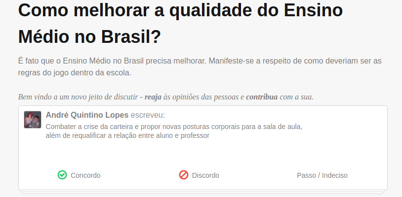
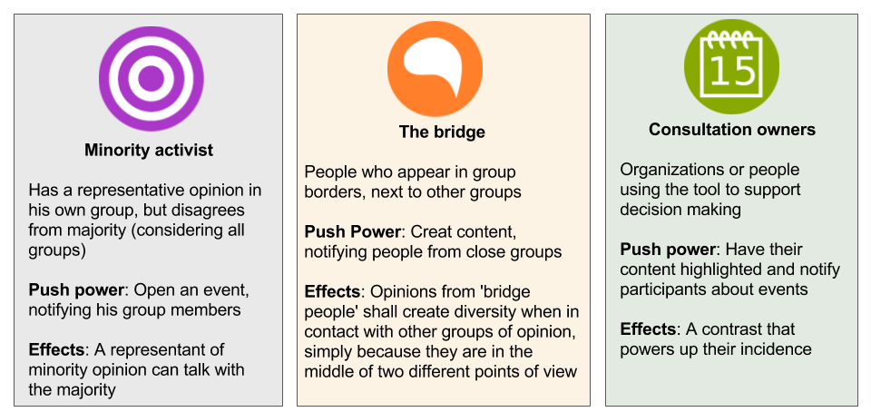
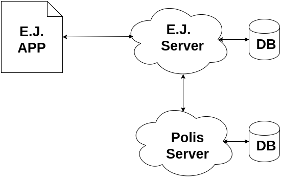

Your browser doesn't support the features required
by impress.js, so you are presented with a simplified version of
this presentation.
For the best experience please use the latest Chrome,Safari
or Firefox browser.
Have you heard about bubbles of opinion?
- A minor part of people are engaged in online discussions, usually the activists
- Recommendation systems, specialized in our profiles control what we see. Black box engines oriented by business interests
- The voice of minorities is usually despised
Bubbles, bubbles everywhere
- Most of us already witnessed any extremist person in our social networks
- Also, fake news are all around
- Common thread/forum architectures does not facilitate the discussion and communication*
*Too much effort to process all generated information
From the dust came Polis
- A web tool that uses A.I. to show different opinion groups in a discussion
- Applies clustering algorithms to identify the opinion groups
Based on crowdsource participation

Majority/Minority are shown in a graph

Empurrando Juntos is a extension on top of Polis API
What we want?
- Go beyond Polis with new features
- Build a platform to increase interaction between different opinion groups
- Blow the bubbles of opinion
How?
- We obtain opinion groups from Polis
- Using gamification concepts we created the Push
- Push owners create events and send messages to other groups
Who gets the push?
- We initially identified three possible profiles

Our Architecture

*A React-native mobile app*And a NodeJS back-end server
How it works
- We track our users on Polis with an external id (xID)
- Polis conversations can be easily embed with Javascript snippets
- EJ calculates profiles based on conversation data
Final Remarks
- EJ arise as a potential tool to bridge dialog between society and state
- The Push resource tries to bring interaction between groups, mitigating
bubbles problem- We are now working on a research to evolve the clustering service
Colaboration is welcome!
Our repositories are available at:
- github.com/cidadedemocratica/pushingtogether
- github.com/cidadedemocratica/app_pushingtogether